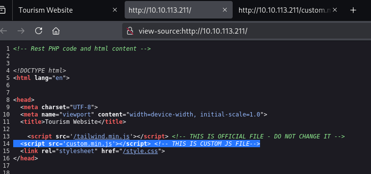

O laboratório Traverse do TryHackMe propõe um cenário realista de análise e exploração de aplicações web, com foco em APIs e práticas de segurança. O objetivo é identificar falhas comuns, entender o fluxo de exploração e aprimorar habilidades de investigação em ambientes controlados, simulando situações do cotidiano profissional de segurança ofensiva.
Enumeração de Diretórios e Arquivos: O lab inicia com a análise do site comprometido, onde é fundamental identificar diretórios e arquivos relevantes (como logs e imagens) a partir de dicas presentes em comentários do código-fonte.
Exploração de Endpoints de API: Um dos pontos centrais é a exploração de endpoints de API mal protegidos, permitindo acesso a informações sensíveis, como e-mails, senhas e privilégios de usuários. O participante aprende a manipular parâmetros para acessar dados de diferentes IDs e identificar usuários administrativos.
Análise e Deobfuscação de Código: Somos desafiados a identificar técnicas de ofuscação em arquivos JavaScript e deobfuscá-los para extrair informações.
Identificação e Remoção de Webshells: Localizar webshells, identificar arquivos renomeados e restaurar funcionalidades legítimas do site, removendo mensagens de comprometimento e recuperando o controle do ambiente.
O acesso inicial ao ambiente apresenta uma tela de aviso de hacking. Utilizando Ctrl+U, é possível visualizar o código-fonte da página e identificar scripts JavaScript relevantes para o desafio.
O arquivo custom.min.js está ofuscado. O tipo de ofuscação utilizado é a primeira flag do lab.

Para decodificar o hash, utilizei o hashes.com, que retornou um resultado extenso. Ao analisar o texto, é possível identificar facilmente as palavras que compõem a flag.

Retornando ao código-fonte, é possível identificar arquivos comentados, incluindo um diretório de logs. Acessando /logs/ diretamente pela URL, encontramos informações valiosas e uma nova flag.


A mensagem diz que o diretório foi nomeado conforme a primeira fase do SSDLC. Após pesquisa, basta inserir o nome correto na URL. O acesso é protegido por uma senha, disponível no arquivo de logs.


Com acesso ao diretório, encontramos instruções e um endpoint de API. Manipulando o parâmetro customer_id, é possível consultar diferentes usuários e obter informações sensíveis.


Por tentativa e erro, identificamos o usuário administrador, suas credenciais e a URL de login. Com isso, acessamos o painel administrativo.


O painel permite executar comandos como System Owner, inicialmente retornando apenas www-data. Utilizando as DevTools (F12), é possível visualizar e alterar o comando executado.

O comando pode ser mudado para, por exemplo, ls para listar os arquivos no diretório, e então clicamos em Execute novamente. E já encontramos vários arquivos, além das flags, o mais interessante agora é main.php.


Com a senha obtida, acessamos o arquivo renomeado via URL e, finalmente, o painel de gerenciamento de arquivos, onde localizamos a última flag do lab.